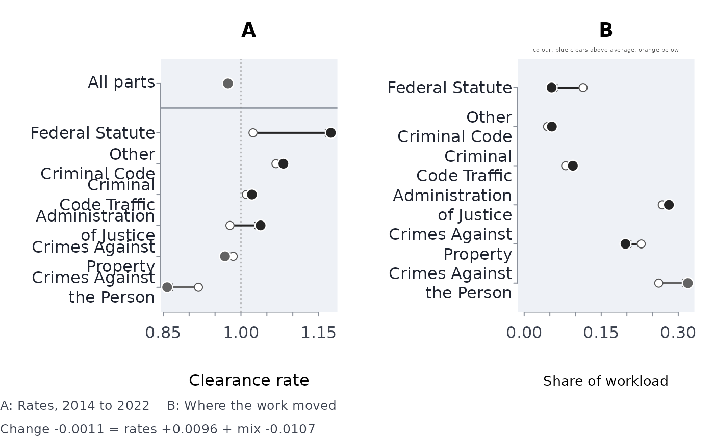

Decompose a change in a clearance rate into rate and case-mix effects
Source:R/justice.R
clrdcmp.RdAn aggregate clearance rate – cases disposed per case received by a court, or offences cleared per offence reported to a police service – is a weighted mean of the rates of its parts (offence groups, courts, case types), weighted by each part's share of the denominator. It can therefore fall while the rate of every part rises, if the work shifts toward the parts that clear more slowly: Simpson's paradox. This function compares two periods (or two jurisdictions), splits the change in the aggregate exactly into the change in the parts' rates and the change in the mix, reports the rate standardised to a common mix, tests the within-part change, and says whether the comparison is a reversal.
Arguments
- num
Cases disposed (or cleared), one per part and comparison.
- den
Cases received (or reported), one per part and comparison.
- grp
The part each row belongs to: offence group, court, case type.
- cmp
The comparison each row belongs to: exactly two values, such as two years or two jurisdictions.
- base
Which value of
cmpis the baseline. Default: the first in sorted order.- conflvl
Confidence level. Default 0.95.
Value
A list of class rmbl_clearance_decomposition:
groupsone row per part: the counts, rates and denominator shares (
weight) in both comparisons, the rate ratio with its exact interval, and the part'srateeffandmixeff.overallthe aggregate rates, their
change, itsrateeffandmixeff(which add to it exactly), the comparison rate standardised to the baseline mix (staonbase) and to the average mix (staonave).rateratiothe crude rate ratio and the Mantel-Haenszel rate ratio over the parts, each with its interval, and the p-value for the stratified ratio.
simpson"full"when every part moved one way and the aggregate the other;"mix"when the aggregate moved against the mix-standardised change (the mix outweighed the rates);"none"otherwise; with the number of parts that rose and fell.
Details
With part rates \(r_g\) and denominator shares \(w_g\), the aggregate is \(R = \sum_g w_g r_g\). Kitagawa's symmetric decomposition writes the change between comparisons A and B as $$R_B - R_A = \sum_g \bar w_g (r_{gB} - r_{gA}) + \sum_g \bar r_g (w_{gB} - w_{gA}),$$ with \(\bar w_g\) and \(\bar r_g\) the averages over A and B: the first sum is the rate effect (the change the aggregate would show with the mix held at its average), the second the mix effect. The two add to the observed change with no residual. Because the shares' changes add to zero, each part's mix term is reported as \((\bar r_g - \bar R)(w_{gB} - w_{gA})\), centred on the average aggregate rate \(\bar R\): the total is the same, and a part's term is negative when work moved toward a part that clears below average.
The within-part change is estimated by the Mantel-Haenszel rate ratio, treating each part's numerator as a Poisson count over its denominator, with the Greenland-Robins variance; the p-value is for the hypothesis that the ratio is 1. Each part's own rate ratio has the exact conditional (binomial) interval. A court's clearance rate can exceed 1, so it is treated as a rate rather than a proportion; for police clearance, where it is a proportion, the Poisson treatment is conservative.
The decomposition is only as good as the parts: a different grouping (courts instead of offence groups) can tell a different story, and both can be right. Demers and Rossmo found 210 reversals in fifteen years of clearance rates for Canada's fifty largest police services, four of them reversed in every crime category, and advise comparing clearance rates only within comparable mixes.
References
Simpson, E. H. (1951). The interpretation of interaction in contingency tables. Journal of the Royal Statistical Society, Series B, 13(2), 238-241.
Kitagawa, E. M. (1955). Components of a difference between two rates. Journal of the American Statistical Association, 50(272), 1168-1194. doi:10.2307/2281213
Das Gupta, P. (1993). Standardization and Decomposition of Rates: A User's Manual. U.S. Bureau of the Census, Current Population Reports P23-186. Washington, DC.
Greenland, S. and Robins, J. M. (1985). Estimation of a common effect parameter from sparse follow-up data. Biometrics, 41(1), 55-68.
Demers, S. and Rossmo, D. K. (2015). Simpson's paradox in Canadian police clearance rates. Canadian Journal of Criminology and Criminal Justice, 57(3), 424-434. doi:10.3138/cjccj.2014-E29
See also
caseflow for the clearance rate over time.
Examples
g <- read.csv(system.file("extdata", "ocj_offence_groups.csv",
package = "rmoriebricklayer"))
g <- g[g$year %in% c(2014, 2022), ]
cd <- clrdcmp(g$disposed, g$received, g$offence_group, g$year)
cd
#> ── Clearance rate, 2022 against 2014: rate and case-mix effects (Kitagawa)
#> 2014: 0.9760 2022: 0.9749 change -0.0011 = rate effect +0.0096 + mix effect -0.0107
#> 2022 standardised to the 2014 mix: 0.9912; to the average mix: 0.9830
#> 4 of 6 parts rose, 2 fell. Simpson's paradox through the mix: the aggregate fell, but at a fixed mix it rose
#>
#> part rate 2014 rate 2022 share 2014 share 2022 ratio
#> Administration of Justice 0.9788 1.0378 0.2689 0.2818 1.0603
#> Crimes Against Property 0.9851 0.9692 0.2279 0.1973 0.9839
#> Crimes Against the Person 0.9180 0.8576 0.2620 0.3187 0.9343
#> Criminal Code Traffic 1.0105 1.0212 0.0808 0.0948 1.0106
#> Federal Statute 1.0232 1.1734 0.1148 0.0534 1.1468
#> Other Criminal Code 1.0675 1.0818 0.0455 0.0539 1.0134
#> lower upper rateeff mixeff
#> 1.0484 1.0725 0.016300 4.24e-04
#> 0.9710 0.9969 -0.003370 -5.16e-05
#> 0.9233 0.9454 -0.017500 -4.97e-03
#> 0.9905 1.0311 0.000939 5.66e-04
#> 1.1230 1.1710 0.012600 -7.54e-03
#> 0.9874 1.0402 0.000713 8.34e-04
#>
#> Rate ratio 2022/2014: crude 0.9989 (0.9929 to 1.0050); within parts (Mantel-Haenszel) 1.0085 (1.0024 to 1.0146), p 0.00644
#> ──────────────────────────────────────────────────────────────────
plot(cd)

# Simpson's paradox in four numbers: each part clears better in B, yet the
# aggregate falls, because B's workload moved to the part that clears less
toy <- clrdcmp(num = c(90, 20, 19, 60),
den = c(100, 50, 20, 140),
grp = c("minor", "serious", "minor", "serious"),
cmp = c("A", "A", "B", "B"))
toy
#> ── Clearance rate, B against A: rate and case-mix effects (Kitagawa)
#> A: 0.7333 B: 0.4938 change -0.2396 = rate effect +0.0371 + mix effect -0.2766
#> B standardised to the A mix: 0.7762; to the average mix: 0.6350
#> 2 of 2 parts rose, 0 fell. Simpson's paradox: every part moved the other way to the aggregate (2 of 2)
#>
#> part rate A rate B share A share B ratio lower upper rateeff mixeff
#> minor 0.9 0.9500 0.6667 0.125 1.0556 0.6075 1.7454 0.0198 -0.169
#> serious 0.4 0.4286 0.3333 0.875 1.0714 0.6367 1.8767 0.0173 -0.108
#>
#> Rate ratio B/A: crude 0.6733 (0.4978 to 0.9072); within parts (Mantel-Haenszel) 1.0634 (0.7465 to 1.5149), p 0.733
#> ──────────────────────────────────────────────────────────────────
# every part must appear in both comparisons
try(clrdcmp(c(5, 6, 7), c(10, 10, 10), c("x", "y", "x"), c(1, 1, 2)))
#> Error : part "y" is in only one comparison; a rate change needs it in both (merge or drop it first)